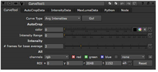

这一章集中在 CurveTool 节点。节点分析帧序列的一个方面，并基于分析创建动画曲线。然后，可以使用曲线数据在其他地方驱动效果。例如，您可以将匹配的闪烁添加到 CG 渲染中。
可以使用 CurveTool 节点分析帧序列的四个不同方面，具体取决于在节点控件中选择的曲线类型:
• AutoCrop 查找帧序列边缘周围的黑色区域 (或您选择的任何颜色)，并跟踪它们的大小和位置。这对于运行裁剪节点以删除不必要的外部像素并加快计算非常有用。有关更多信息，请参见 裁剪黑色边缘 .
• 平均强度 用于获取帧序列中的平均像素值，然后在其他地方匹配该强度。它获取帧范围中的第一个值和选定的下一个值，将它们相加并除以二，返回两者之间的平均值。例如，您可能希望使用它来匹配背景板在前景板烟雾中的火焰闪烁。有关更多信息，请参见 分析帧序列的强度 和 删除闪烁 .
• 曝光差异 分析帧序列中的曝光更改。它采用帧范围中的第一个值和选定的下一个值，并返回两者之间的差异。您可以使用结果来匹配其他地方的相同曝光。有关更多信息，请参见 分析曝光差异 .
• 最大亮度像素 跟踪帧序列中最亮和最暗的像素。例如，这在以下情况下可能很有用。假设你有一个夜间序列，描述一个人拿着手电筒在黑暗的房子里移动，并想在移动的手电筒上添加镜头耀斑。随着时间的推移，知道最亮像素的位置可以让你匹配移动镜头光晕并正确定位它，而不必手动设置动画。有关更多信息，请参见 跟踪最亮和最暗的像素 .
|
 |
| CurveTool 节点属性面板。 |
提示: 如果您熟悉 Shake，您可能已经使用了 PixelAnalyzer 节点。CurveTool 节点是 核武器 相当于 PixelAnalyzer。
|
|